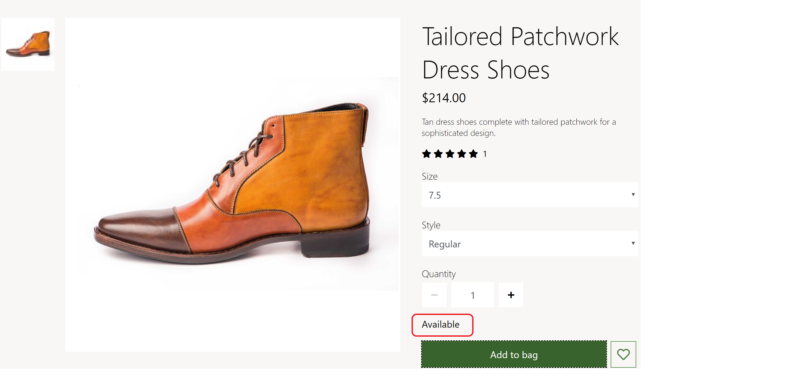
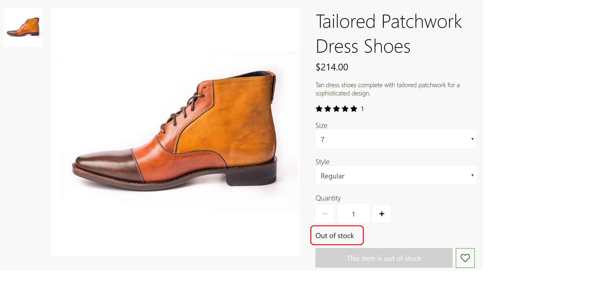
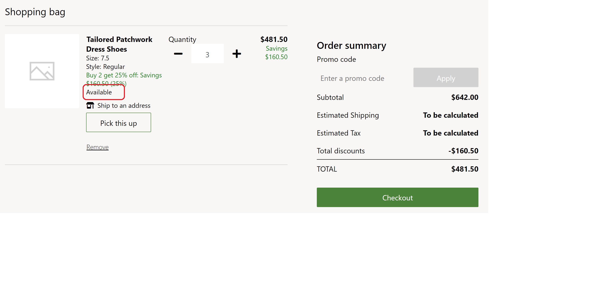

Wenden Sie Inventareinstellungen an
Important
Dynamics 365 Retail ist jetzt Dynamics 365 Commerce und bietet umfassende Handelsfunktionen für alle Kanäle – von E-Commerce über Shops bis hin zu Callcentern. Weitere Informationen zu diesen Änderungen finden Sie unter Microsoft Dynamics 365 Commerce.
In diesem Thema werden Inventareinstellungen behandelt und beschrieben, wie sie in Microsoft Dynamics 365 Commerce angewendet werden.
Übersicht
Die Inventareinstellungen geben an, ob das Inventar überprüft werden soll, bevor Produkte in den Warenkorb gelegt werden. Sie definieren auch inventarbezogene Merchandising-Nachrichten wie Auf Lager und Nur noch wenige übrig. Diese Einstellungen stellen sicher, dass ein Produkt nicht gekauft werden kann, wenn es nicht vorrätig ist.
Dynamics 365 Commerce bietet Schätzungen zur Verfügbarkeit von Produkten. Informationen zur Berechnung der geschätzten Verfügbarkeit finden Sie unter Berechnen Sie die Lagerverfügbarkeit für Einzelhandelskanäle.
In Commerce Site Builder können Bestandsschwellenwerte und -bereiche für ein Produkt oder eine Kategorie definiert werden. Sie bestimmen, ob der Lagerbestand als vorrätig, niedrig oder nicht vorrätig eingestuft werden kann. Einzelheiten finden Sie unter Konfigurieren Sie Bestandpuffer und Bestandebenen.
Note
Unterstützung für Bestandsschwellen und -bereiche finden Sie in der Dynamics 365 Commerce-Version 10.0.12.
Bestandeinstellungen
In Commerce werden Bestandeinstellungen unter Seiteneinstellungen > Erweiterungen > Bestandsverwaltung im Site Builder definiert. Es gibt vier Bestandeinstellungen, von denen eine veraltet (veraltet) ist:
Bestandsüberprüfung in App aktivieren – Diese Einstellung aktiviert eine Produktbestandsüberprüfung. Wenn Sie Box-, Warenkorb- und Abholmodule kaufen, wird der Produkbestand überprüft und das Hinzufügen eines Produkts zum Warenkorb nur dann ermöglicht, wenn Bestand verfügbar ist.
Lagerbestand basierend auf – Diese Einstellung definiert, wie die Lagerbestände berechnet werden. Die verfügbaren Werte sind Insgesamt verfügbar, Physisch verfügbar und Nicht verfügbar. In Commerce Site Builder können die Bestandsschwellenwerte und -bereiche für ein Produkt oder eine Kategorie definiert werden. Die Inventar-APIs geben Produktbestandinformationen für die Eigenschaft Insgesamt verfügbar und Physisch verfügbar zurück. Der Händler entscheidet, ob der Wert Insgesamt verfügbar oder Physisch verfügbar verwendet wird, um die Anzahl der Bestände und die entsprechenden Bereiche für den Status Lagerbestand verfügbar und Lagerbestand nicht verfügbar zu bestimmen.
Der Wert Nicht vorrätige Schwelle des Lagerbestand basierend auf Einstellungen ist ein alter (veralteter) Wert. Wenn er ausgewählt ist, wird die Bestandanzahl aus den Ergebnissen des Werts Insgesamt verfügbar ermittelt, aber der Schwellenwert wird durch die Einstellung Nicht vorrätige Schwelle numerische Einstellung definiert, die später beschrieben wird. Diese Schwellenwerteinstellung gilt für alle Produkte auf einer E-Commerce-Website. Wenn der Lagerbestand unter dem Schwellenwert liegt, gilt ein Produkt als nicht vorrätig. Ansonsten gilt es als auf Lager. Die Möglichkeiten des Werts Nicht vorrätige Schwelle ist begrenzt und wir empfehlen nicht, ihn in Version 10.0.12 und höher zu verwenden.
Bestandsbereiche – Diese Einstellung definiert die Bestandbereiche, für die die Meldung vor Ort angezeigt wird. Er ist nur anwendbar, wenn entweder der Insgesamt verfügbar oder der Wert Physisch verfügbar ausgewählt für die Einstellung Lagerbestand basierend auf. Die verfügbaren Werte sind Alle, Niedrig und vergriffen und Ausverkauft.
- Wenn Alle ausgewählt ist, werden Meldungen für alle Bestandsbereiche angezeigt, von Auf Lager (Meldung Verfügbar) bis Nicht vorrätig (Meldung Nicht vorrätig).
- Wenn tief und nicht an Lager ausgewählt ist, werden Meldungen für alle Bestandsbereiche angezeigt, ausgenommen Auf Lager (Meldung Verfügbar).
- Wenn Ausverkauft ausgewählt ist, werden nur die Nachrichten Nicht vorrätig angezeigt.
Nicht vorrätige Schwelle – Diese alte numerische Einstellung wird nur wirksam, wenn der Wert Nicht vorrätige Schwelle für die Einstellung Lagerbestand basierend auf ausgewählt ist.
Important
Diese Einstellungen sind in Dynamics 365 Commerce 10.0.12 verfügbar. Wenn Sie eine Aktualisierung von einer älteren Version von Dynamics 365 Commerce durchführen, müssen Sie die Datei appsettings.json manuell aktualisieren. Anweisungen zum Aktualisieren der Datei appsettings.json finden Sie unter SDK- und Modulbibliothekupdates (This is an external link).
Module, die Bestandeinstellungen verwenden
Kaufbox, Wunschliste, Filialauswahl, Warenkorb und Warenkorbsymbolmodule verwenden Bestandeinstellungen, um die Inventarbereiche und Meldungen anzuzeigen.
Das folgende Bild zeigt ein Beispiel für eine Produktdetailseite (PDP), auf der eine Meldung Auf Lager (Verfügbar) angezeigt wird.

Das folgende Bild zeigt ein Beispiel für eine Produktdetailseite (PDP), auf der eine Meldung Nicht auf Lager (Nicht Verfügbar) angezeigt wird.

Das folgende Bild zeigt ein Beispiel für einen Einkaufswagen, mit der Meldung auf Lager (Verfügbar).

Zusätzliche Ressourcen
Übersicht über die Modulbibliothek
Bestandpuffer und Bestandsebenen konfigurieren